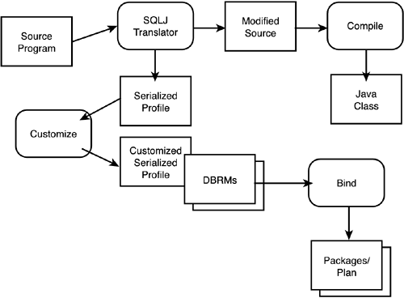

|
|
< Day Day Up > |
|
Using Java and DB2Java is another alternative programming technique. It is an increasingly popular choice for DB2 application development. Just about everybody has at least heard of Java. But just because you've heard about it doesn't mean you understand it. Even if you know a bit about it, there is always more to discover. Let's face it, there's a lot of hype out there regarding anything that concerns the Internet. Now that DB2 for z/OS fully supports Java, Java usage will continue to increase. So, let's learn a bit about Java. What Is Java?First and foremost, Java is an object-oriented programming language. Developed by Sun Microsystems in 1991, Java was modeled after, and most closely resembles C++. But Java requires a smaller footprint and eliminates some of the more complex and error-prone features of C and C++ (such as pointer management and the go to construct). Additionally, many tasks have been moved from the language itself to the JVM (Java Virtual Machine). Java enables animation for and interaction with the World Wide Web. Although Web interaction is Java's most touted feature, it is a fully functional programming language that can be used for developing general-purpose programs independent from the Web. Using HTML, developers can run Java programs, called applets, over the Web. But Java is a completely different language from HTML, and it does not replace HTML. Java applets are automatically downloaded and executed by users as they surf the Web. The Java applet is run by the Web browser. What makes Java special is that it was designed to be multi-platform. In theory, regardless of the machine and operating system you are running, any Java program should be able to run. Many possible benefits accrue because Java enables developers to write an application once and then distribute it to be run on any platform. Benefits can include reduced development and maintenance costs, lower systems management costs, and more flexible hardware and software configurations. So, to summarize, the major qualities of Java are
Now that DB2 for z/OS supports application development using Java, all of these qualities are available to DB2 applications. Java Bytecodes and the Java Virtual MachineAfter a Java program is written, the source code is compiled into machine-independent constructs called bytecodes using the Java compiler. Bytecodes are the manner in which Java achieves its platform independence. Because the Java bytecode is in a machine-independent, architecture-neutral format, it can run on any system with a standard Java implementation. The Java bytecodes are then processed by the Java Virtual Machine (JVM). The JVM interprets the bytecodes for the platform on which the Java program is to be run. The JVM loads and verifies the Java bytecode. It is then passed to the Java interpreter to be executed. Alternatively, the bytecodes can be passed to a just-in-time (JIT) compiler to be compiled into machine code to be executed. CAUTION Java has a reputation as a "slow" language. That is, the performance of Java is questionable. The major disadvantage is that Java is an interpretive language. Both the Java interpreter and the JIT compiler consume resources and take time to process the Java bytecodes before execution. The performance of a Java program will pale in comparison to a program compiled and link-edited into object code (such as a COBOL program). As a developer, you must decide whether the platform independence and Web development capabilities offset the potential for performance degradation. Java Applications, Applets, and ServletsThere are three types of Java implementation methods that you can implement when accessing DB2 data from Java—Java applications, applets, and servlets. A Java application program is basically the same as a program written in any other programming language. It can perform all of the tasks normally associated with programs, including many tasks that Java applets cannot perform. Furthermore, a Java application does not need a browser to be executed. It can be executed in a client or server machine. A Java applet is a small application program that must be downloaded before it is run within a Java-enabled Web browser. Java applets reside on a Web server. When the Web server returns an HTML page that points to a Java applet, the Java-enabled Web browser requests the applet to be downloaded from the Web server. After the applet is received at the browser, either the browser starts the applet internally, or an external JVM executes it. Applets typically perform simple operations, such as editing input data, control screen interaction, and other client functionality. Of course, Java applets can be written to perform more complex functionality, but to load and run non-Java code in the client requires signed applets, which have the authority needed to run code in the client machine. NOTE You should be aware of the performance implications of the requirement for Java applets to be downloaded before they can be run. In general, Java applets are small, so the performance impact should be negligible. Additionally, Java applets can be cached by the Web browser, further diminishing the performance impact. A Java servlet is basically server-side Java. A Java servlet runs on the Web server, just like an applet runs in the Web browser. Java servlets can be used to extend the functionality of the Web server. The Web server hands requests to the servlet, which replies to them. Servlets can be used instead of CGI applications. NOTE To run Java servlets, your Web server must support the Java servlet API, developed by JavaSoft. This API defines how the servlet communicates with the server. Java servlets have security advantages over client-side Java applets. A servlet that runs on a Web server inside a firewall can control access to sensitive data and business logic. Java applets do not inherently provide these security capabilities. Before choosing which Java development style to use, you must know the basics of the environment in which the program must run. Ask the following questions when deciding what type of Java program is required for your development needs:
Java applications, Java applets, and Java servlets are similar in nature. However, a different method is used to invoke each of them. Java applets and servlets are started from an HTML page. Java applications do not require a Web component but can be used as part of an intranet solution. To implement any Java programs, you need to use the Java Developers Kit, or JDK for short. The JDK is a development environment for writing Java. The JDK includes the Java Virtual Machine (JVM), Java classes, source files to create the classes in the JVM, documentation, and the JDK tools required for building and testing Java bytecode. These tools include the Java compiler and interpreter, the Java applet viewer, and the Java debugger. Enterprise Java BeansEnterprise Java Beans, or EJBs for short, are part of Java 2 Enterprise Edition (J2EE). EJBs are Java programs written as components that reside on the server. They are used to simplify the delivery of distributed applications and Web services by assembling components to achieve business functionality. Such an approach can greatly reduce the amount of time required to develop and deploy scalable enterprise Java applications. A typical Java development environment for DB2 includes J2EE and WebSphere for building enterprise applications. JDBC Versus SQLJThere are two options for accessing DB2 for z/OS data in Java application programs: JDBC and SQLJ. It is imperative that you understand the differences between these two methods in order to develop proper database access for your Java programs. Java Database Connectivity, or JDBC, is an API that enables Java to access relational databases. Similar to ODBC, JDBC consists of a set of classes and interfaces that can be used to access relational data. Anyone familiar with application programming and ODBC (or any call-level interface) can get up and running with JDBC quickly. JDBC uses dynamic SQL to access DB2 data. The primary benefits of JDBC include the following:
Potential drawbacks of JDBC include in the following:
SQLJ enables developers to embed SQL statements in Java programs. SQLJ provides static SQL support to Java. Developers can embed SQL statements into Java, and a precompiler is used to translate SQL into Java code. Then the Java program can be compiled into bytecodes, and a bind can be run to create a package for the SQL. Simply stated, SQLJ enables Java programs to be developed the way most DB2 programs have been developed for years. Of course, SQLJ does not allow dynamic SQL. But you can mix SQLJ and JDBC in a single Java program, which effectively enables you to choose static or dynamic SQL for your Java programs. The primary benefits of SQLJ include the following:
Potential drawbacks of the SQLJ approach include the following:
To get a quick understanding of the differences between JDBC and SQLJ, review the code fragments in Listings 14.2 and 14.3. These listings do not show complete programs, but you can use them to understand the different means by which a SQL statement is issued with JDBC versus with SQLJ. Listing 14.2. JDBC Code Fragment
// Create the connection
// change the following URL to match the location name
// of your local DB2 for OS/390.
// The URL format is: "jdbc:db2os390:location_name"
String url = "jdbc:db2os390:st11db2g";
Connection con = DriverManager.getConnection (url);
// Create the Statement
Statement stmt = con.createStatement();
System.out.println("**** JDBC Statement Created");
// Execute the query and generate a ResultSet instance
ResultSet rs = stmt.executeQuery("SELECT LASTNAME, HIREDATE FROM EMP");
System.out.println("**** JDBC Result Set Created");
// Close the statement
stmt.close();
// Close the connection
con.close();
Listing 14.3. SQLJ Code Fragment
{
#sql public iterator ByPos(String,Date);
// Declare positioned iterator class ByPos
ByPos positer; // Declare object of ByPos class
String name = null;
Date hrdate;
#sql positer = { SELECT LASTNAME, HIREDATE FROM EMP };
#sql { FETCH :positer INTO :name, :hrdate };
// Retrieve the first row from the result table
while ( !positer.endFetch() )
{ System.out.println(name + " was hired in " + hrdate);
#sql { FETCH :positer INTO :name, :hrdate };
// Retrieve the rest of the rows
}
}
So, in general, JDBC programs are more portable and manage their own connections to DB2, but require dynamic SQL. SQLJ programs are easier to code because they require fewer lines of code and can be more efficient because they use static SQL, but require program preparation and are less portable. NOTE Be sure to check out the Java sections of IBM's Web site for additional information regarding Java support and sample Java code. Two good URLs to bookmark are Java Program PreparationBoth JDBC and SQLJ programs need to be prepared before they can be run. But a SQLJ program requires precompilation and binding, whereas a JDBC program does not. To prepare a JDBC-only Java program is the same as preparing any Java program with no database access. The only required step is to compile the program using the javac command. To prepare a Java program that contains SQLJ calls, you will need to follow the program preparation steps as depicted in Figure 14.4. In general, you will follow similar steps to what you would for preparing a COBOL program, but with some differences. The first step is to run the source code through the SQLJ Translator (sqlj). This produces a modified source file and a SQLJ "serialized profile." The modified source is compiled into a Java class to produce Java bytecodes. The SQLJ "serialized profile" is customized into standard DB2 DBRMs using db2profc. At this point you can BIND the DBRMs into packages and then the packages in to a plan; or you can simply BIND the DBRMs directly into a single plan. Figure 14.4. SQLJ program preparation. Using Result Set Iterators to Retrieve Multiple RowsTraditional DB2 application programs written in host languages use a DB2 cursor to retrieve individual rows from a multi-row result set. The SQLJ equivalent of a cursor is a result set iterator. A result set iterator can be passed as a parameter to a method. The result set iterator is defined using an iterator declaration clause specifying a list of Java data types. The Java data types represent columns of the table in the result set. The information in Table 14.2 shows the SQL data types and their equivalent SQLJ data types that can be specified in result set iterator declarations. The SQLJ data type in the left column can be used for data retrieved that is of any of the SQL data types listed in the right column.
NOTE The byte[] SQLJ data type is equivalent to the SQL data type with a subtype of FOR BIT DATA. The java.sql.Date, java.sql.Time, and java.sql.Timestamp data types are part of the JDBC API. Java GuidelinesThe following guidelines apply to Java application development against DB2 for z/OS data. Beware of Java PerformanceAs already noted, Java has a reputation for sluggish performance due to being interpreted instead of compiled. Java applications will tend to consume more CPU than COBOL applications. A good rule of thumb is to assume that Java will consume about 3 times more than COBOL in a DB2 V6 environment or about 2 times more in a DB2 V7 or V8 environment. Beware of Character DataJava does not have a native fixed-length text data type. For this reason, many Java shops favor defining VARCHAR columns in their tables instead of CHAR columns—even for very small character columns. This allows the Java variables to match up with the DB2 columns without degrading from Stage 1 to Stage 2.
NOTE
Beware of SMALLINT DataThere is no Java host variable equivalent for a SMALLINT data type. For this reason, it is a good idea to specify INTEGER columns in tables that are predominantly accessed by Java instead of SMALLINT—even for very small integers. This allows the Java program to match up Integer host variables with the DB2 INTEGER columns. NOTE
Use Dynamic SQL Caching for JDBCIf you are using JDBC programs then you are issuing dynamic SQL statements. Be sure to turn on dynamic SQL caching so that dynamic access paths can be reused when the same SQL statement is executed multiple times. This can greatly enhance the performance of all your dynamic SQL statements, because DB2 can reuse an access path instead of preparing a new one each time the statement is executed. Of course, for dynamic SQL caching to work the SQL statement must be 100% the same—meaning that the statement must be exactly the same length and there can be no stray or trailing blanks. Release Your Java ResourcesBe sure to release your Java resources as soon as your program no longer requires them. This means you should intelligently close result sets, prepared statements, and callable statements in your code. Access Only the Columns RequiredAlthough this guideline applies to any DB2 program, it is even more important to follow in your Java programs. This is so because a Java object is created for each column that is retrieved. Therefore, be sure to SELECT only the columns you absolutely require—and never any extras. Each column accessed by your Java program adds overhead and therefore degrades the performance of your application. Use Procedural Objects to Reduce SQL in Your Java ProgramsConsider using triggers, functions, and stored procedures to reduce the amount of SQL in your Java program. Triggers can be used to validate data, functions to transform data, and stored procedures to reduce network traffic. Use the Appropriate JDBC Driver TypeThere are four types of JDBC drivers:
For applets, favor a Type 4 driver as it will give better performance than a Type 3 driver. For most DB2 applications, favor a Type 2 driver. Setting the Isolation Level in a Java ProgramYou can use the SET TRANSACTION ISOLATION LEVEL clause to set the isolation level for a unit of work within an SQLJ program. For Java programs that contain both SQLJ and JDBC connections, setting the isolation level in this way will affect both the SQLJ connection and the JDBC connection. You can change the isolation level only at the beginning of a transaction. Refer to Table 14.3 for a summary of the valid values that you can specify in the SET TRANSACTION ISOLATION LEVEL clause and their equivalent DB2 for z/OS ISOLATION parameter values. Table 14.3 shows the SQLJ isolation levels and their DB2 for OS/390 and z/OS equivalents.
|
|
|
< Day Day Up > |
|